阅读词表
| 词条 | 拼音 | 类型 | 说明 |
|---|---|---|---|
| 武王 | wǔ wáng | person | 周武王。 |
| 纣王 | zhòu wáng | person | 商朝末代王帝辛。 |
| 周公 | zhōu gōng | person | 周公旦，武王之弟。 |
| 殷都 | yīn dū | place | 商朝后期都城区域。 |
| 逸周书 | yì zhōu shū | text | 保存周初传说和文献材料的古书。 |
| 牧野 | mù yě | place | 周武王伐纣决战地。 |
| 周公旦 | zhōu gōng dàn | person | 周初政治家。 |
| 殷商 | yīn shāng | site_or_culture | 商朝后期文化和政权。 |
| 人祭 | rén jì | concept | 杀人用于祭祀。 |
| 周武王 | zhōu wǔ wáng | person | 周发，灭商之君。 |
| 世俘 | shì fú | text | 《逸周书》篇名，记周初俘获和献俘。 |
| 盟津 | méng jīn | place | 黄河渡口，周武王伐纣相关地名。 |
| 勖 | xù | rare_word | 劝勉、鼓励。 |
| 人牲 | rén shēng | concept | 被杀用于祭祀的人。 |
| 召公奭 | zhào gōng shì | person | 周初重臣，召国始封君。 |
| 刳 | kū | rare_word | 剖开并挖空；文中见“刳剔孕妇”。 |
| 麾 | huī | rare_word | 古代指挥军队的旗帜；也指挥动旗帜发令。 |
| 罴 | pí | rare_word | 棕熊一类的猛兽。 |
| 旄 | máo | artifact | 古代旗帜，旗杆顶端饰牦牛尾。 |
| 貔 | pí | rare_word | 古书所见猛兽名。 |
| 愆 | qiān | rare_word | 过失；亦指超过或耽误。 |
| 牧野之战 | mù yě zhī zhàn | concept | 周武王灭商的决战。 |
| 甲子日 | jiǎ zǐ rì | concept | 干支纪日中的甲子日。 |
| 太公 | tài gōng | person | 姜太公吕尚。 |
| 髳 | máo | place_or_group | 参与牧野之战的古代西南部族。 |
| 镐京 | hào jīng | place | 西周都城。 |
| 宄 | guǐ | rare_word | 坏人；文中见“奸宄”。 |
| 氂 | máo | rare_word | 牦牛的古字或异体。 |
| 麈 | zhǔ | rare_word | 古书所载的一种鹿类大兽；本章《逸周书·世俘解》猎获清单中作“麈十有六”。 |
| 俟 | sì | rare_word | 等待。 |
| 慝 | tè | rare_word | 邪恶、恶念。 |
| 嘏 | gǔ | rare_word | 福；文中见“顺嘏”。 |
| 燎祭 | liáo jì | concept | 焚烧祭品的祭祀方式。 |
| 碾子坡遗址 | niǎn zi pō yí zhǐ | 项目词典 | 陕北地区与周族早期活动相关的遗址。 |
| 偃师商城 | yǎn shī shāng chéng | 项目词典 | 商代早期城址，位于二里头以东。 |
| 文王大宅 | wén wáng dà zhái | 项目词典 | 周原遗址中的大型西周建筑基址。 |
| 甲骨卜辞 | jiǎ gǔ bǔ cí | 项目词典 | 商代刻写在甲骨上的占卜文字。 | 刻写在龟甲兽骨上的占卜文字。 | 刻写在甲骨上的占卜记录。 | 刻写在龟甲兽骨上的占卜辞句。 |
| 郑州商城 | zhèng zhōu shāng chéng | 项目词典 | 商代早期大型城址。 |
| 东南夷 | dōng nán yí | 项目词典 | 商朝东南方向诸夷族群。 |
| 伯邑考 | bó yì kǎo | 项目词典 | 文王长子。 |
| 周文王 | zhōu wén wáng | 项目词典 | 周族领袖姬昌。 |
| 孔颖达 | kǒng yǐng dá | 项目词典 | 唐代经学家，《周易正义》编纂者之一。 |
| 小双桥 | xiǎo shuāng qiáo | 项目词典 | 郑州西北中商时期重要遗址。 |
| 括地志 | kuò dì zhì | 项目词典 | 唐代地理著作，常被古书注释引用。 |
| 老牛坡 | lǎo niú pō | 项目词典 | 西安附近商代遗址，文中涉及商人据点和人祭。 | 陕西西安商代遗址。 |
| 上帝 | shàng dì | 项目词典 | 商周宗教中的最高神。 |
| 亶父 | dǎn fǔ | 项目词典 | 古公亶父；周族迁居周原时的首领。 |
| 从容 | cóng róng | 项目词典 | 不慌不忙。 |
| 偃师 | yǎn shī | 项目词典 | 今河南洛阳附近地名，二里头遗址所在地。 |
| 儒家 | rú jiā | 项目词典 | 以孔子思想及相关经典传统为核心的学派。 |
| 六经 | liù jīng | 项目词典 | 传统所称《诗》《书》《礼》《乐》《易》《春秋》。 |
| 凌晨 | líng chén | 项目词典 | 天快亮时。 |
| 分封 | fēn fēng | 项目词典 | 周初封邦建国制度。 |
| 卜辞 | bǔ cí | 项目词典 | 甲骨占卜后刻写或记录的辞句。 | 甲骨上记录占卜的文字。 | 占卜时刻写或记录的辞句。 |
| 后稷 | hòu jì | 项目词典 | 周族始祖传说中的农业神和祖先。 |
| 吕尚 | lǚ shàng | 项目词典 | 姜太公名尚。 |
| 周原 | zhōu yuán | 项目词典 | 关中地区周族的重要活动中心。 | 关中地区周族重要遗址和活动中心。 | 周族核心区域。 |
| 周昌 | zhōu chāng | 项目词典 | 周文王姬昌，书中常称周昌。 | 周文王姬昌。 | 周文王之名。 |
| 商族 | shāng zú | 项目词典 | 商王朝建立前后的族群共同体。 |
| 商王 | shāng wáng | 项目词典 | 商朝王。 |
| 城邑 | chéng yì | 项目词典 | 古代有人群聚居、具有一定组织和防御功能的城镇聚落。 |
| 太姒 | tài sì | 项目词典 | 周文王夫人。 |
| 始祖 | shǐ zǔ | 项目词典 | 一个族群传说中的最早祖先。 |
| 孔子 | kǒng zǐ | 项目词典 | 春秋时期思想家、教育家，儒家学派的重要奠基者。 |
| 孜孜 | zī zī | 项目词典 | 不倦、不停的样子。 |
| 尚书 | shàng shū | 项目词典 | 儒家经典之一，文中引用《盘庚》篇。 | 保存上古政治文献和诰命的儒家经典。 |
| 屈膝 | qū xī | 项目词典 | 弯曲膝部。 |
| 崇国 | chóng guó | 项目词典 | 商周之际西土方国。 |
| 帝辛 | dì xīn | 项目词典 | 商纣王的王名。 |
| 干之 | gān zhī | 项目词典 | 求取任用；干，求取。 |
| 征伐 | zhēng fá | 项目词典 | 出兵讨伐。 |
| 成王 | chéng wáng | 项目词典 | 周成王，武王之子。 |
| 斩获 | zhǎn huò | 项目词典 | 取得战果或收获。 |
| 方伯 | fāng bó | 项目词典 | 商周时期受命统领一方的首领。 | 受命统领一方的首领。 |
| 族邑 | zú yì | 项目词典 | 以部族为单位聚居形成的城邑或聚落。 | 商代宗族聚落。 |
| 易经 | yì jīng | 项目词典 | 文王卦爻辞体系，书中用以讨论翦商谋略。 | 文王卦爻辞体系。 | 以六十四卦及卦爻辞为主体的古代经典。 |
| 春秋 | chūn qiū | 项目词典 | 孔子时代相关的编年史经典。 |
| 昧爽 | mèi shuǎng | 项目词典 | 拂晓。 |
| 杀祭 | shā jì | 项目词典 | 以杀牲或杀人作为祭祀的仪式。 | 通过杀牲或杀人进行的祭祀。 | 通过杀人或杀牲举行的祭祀。 |
| 殷墟 | yīn xū | 项目词典 | 晚商都邑遗址，甲骨卜辞的重要出土地。 | 商代晚期都城遗址。 |
| 牲祭 | shēng jì | 项目词典 | 以牛、羊、猪、狗等动物作为祭品的祭祀。 |
| 献祭 | xiàn jì | 项目词典 | 把祭品奉献给神灵或祖先。 | 向神灵、祖先等奉献祭品。 |
| 盘庚 | pán gēng | 项目词典 | 商王名，以迁都殷地著称。 |
| 盘旋 | pán xuán | 项目词典 | 回旋。 |
| 神祇 | shén qí | 项目词典 | 神灵。 |
| 祭品 | jì pǐn | 项目词典 | 祭祀时献给神灵或祖先的物品。 |
| 稽首 | qǐ shǒu | 项目词典 | 古代跪拜礼。 |
| 箕子 | jī zǐ | 项目词典 | 商末贵族，后世文献中重要人物。 | 商末贵族，明夷卦解释中的关键人物。 |
| 纠合 | jiū hé | 项目词典 | 集合、聚集。 |
| 羌人 | qiāng rén | 项目词典 | 西方族群，常见于商代卜辞。 |
| 翦商 | jiǎn shāng | 项目词典 | 周人剪灭商朝的政治行动。 | 剪除商朝，文中为全书核心主题。 |
| 苑囿 | yuàn yòu | 项目词典 | 古代畜养禽兽、种植林木的园地。 |
| 蜚廉 | fēi lián | 项目词典 | 秦、赵共同先祖，传说善于奔走。 | 商末人物，恶来与季胜之父。 |
| 西土 | xī tǔ | 项目词典 | 周族所在的西方地区。 |
| 诗经 | shī jīng | 项目词典 | 中国古代诗歌总集，儒家经典之一。 |
| 遗存 | yí cún | 项目词典 | 古代活动留下的遗物、遗迹或现象。 |
| 都邑 | dū yì | 项目词典 | 作为政治中心的大型聚落或城市。 |
| 铜钺 | tóng yuè | 项目词典 | 青铜钺，常象征军事权力。 |
| 麾下 | huī xià | 项目词典 | 将帅旌旗之下，借指部属。 |
青铜器词表
| 器名 | 拼音 | 类型 | 说明 |
|---|---|---|---|
| 钺 | yuè | bronze_item | 大型斧形兵器或礼器。 |
| 戈 | gē | bronze_item | 古代横刃长柄兵器。 |
| 戚 | qī | bronze_item | 古代斧形兵器或礼器。 |
| 铎 | duó | bronze_item | 有舌大铃，可用于政令或乐器。 |
疑难古文字与 OCR 校读表
| 来源 | 当前文字 | 问题 | 处理 |
|---|---|---|---|
| 《逸周书·商誓解》引文（上段） | 明祀上帝，□ □□□，亦惟我后稷之元谷 | 底本保留四个未释文字，占位符不能可靠还原。 | 保留方框，待据《逸周书》可靠校本复核。 |
| 《逸周书·商誓解》引文（下段） | 其周即命，□ □ □□□□□□□□□□□□□□□□□□□□□□ □ □ □ □，尔冢邦君 | 底本存在大段缺文或未转录古文，当前无法可靠补足。 | 保留方框，不据上下文猜补。 |
章节导读札记
| 主题 | 札记 | 操作 |
|---|---|---|
| 暂无章节导读札记 | ||
用户札记
| 类型 | 页 | 内容 |
|---|---|---|
| 暂无用户札记 | ||
原书阅读器页 495原书物理 PDF 页 493印刷页 481
第二十五章牧野鹰扬
继位后短短数年，武王周发就攻灭了殷商王朝。而决定这次王朝更替的“牧野之战”，闻名千古。
但后人很少知道的是，武王对于翦商事业其实高度紧张。成年后，他一直患有严重的焦虑和精神障碍，也许是青年时代的殷都之行和兄长的死对他造成的刺激太过强烈（这是史书缺乏记载的一环），使他后半生都无法摆脱失眠和噩梦的困扰。
周公解梦
文王去世时，周发已经当了近十年的太子，况且文王末期的重要征伐几乎都是实际统帅，所以他的继位没有任何波折。
但武王仍承受着巨大的压力。他深知商朝的强大和暴戾，一旦真正触怒它，任何人都难以预料后果；但放弃翦商事业又是不可能的，从西土直到殷商宫廷里的种种势力都在促使其加速运行。只是，周邦真的有力量对抗商王朝吗？
文王的信念，源于他的“受命”以及易卦占算能力。在世时，他屡屡和上帝沟通，但似乎从未考虑让周发也拥有这种能力。本书推测，武王和他的父亲不太一样，对上帝并没有十足的信心。他难免要想：如果真的像父亲宣传的那样，长兄伯邑考又为何惨死殷都，难道这也是上帝的安排？
所以，武王甚感自己无力继承父亲开启的这一正义而疯狂的事业，即便登上了周王之位，也不敢启用自己的纪年，仍延续着文王受命以来的年号。他没有通神的能力，只能祈望父亲的在天之灵继续护佑周邦。
武王最信任的臣僚，首先是岳父吕尚，自然由他继续担任武王之“师二负责和商朝有关的一切事务；其次是弟弟周公旦，武王的主要助手。周公的“周”是狭义的地名，取自周旦的封邑，可能在周原西部，“文王大宅”以西约30公里的今岐山县周公庙一带。
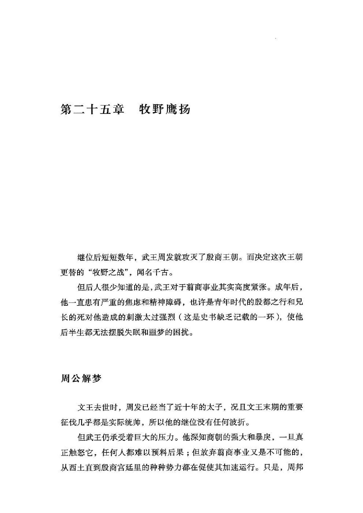
原书阅读器页 496原书物理 PDF 页 494印刷页 482
从武王继位到周灭商，时间并不长，只有短短的四五年。关于武王这段时间的工作和生活，西周时人撰写过一些零散历史篇章，到孔子编辑“六经”时，符合儒家理念的被他编入《尚书》的《周书》，而那些没有入选的则被汇总成《逸周书》，顾名思义，是这些“散落的周代文献”没能进入正式的《尚书》之意。
在传世的儒家经典中，周灭商可以说是顺天应人，毫无悬念。但《逸周书》不同，在它的叙事中，周武王充满着对翦商事业的恐惧，经常向弟弟周公旦寻求建议和安慰。武王二年一月，他曾对周公旦说：“哎呀，我每天每夜都担心着商朝，不知道以后到底会怎么样，请你给我讲讲如何履行天命
维王二祀一月，既生魄，王召周公旦日：“呜呼，余夙夜忌商，不知道极，敬听以勤天命。”（《逸周书•小开武解》）
武王三年，他有次得到情报，说是纣王已经下决心讨伐周邦，信息来源很可靠，又是首先召唤周公旦商议对策。
王召周公旦日：“呜呼，商其咸辜，维日望谋建功，言多信，今如其何？”
还有一次，武王梦到翦商计划泄露，纣王大怒，从梦中惊吓而醒，再次派人叫来弟弟周公旦，对他谈起了心中的恐惧，说盟友实力弱小，还没做好准备，周邦现在无力和商朝展开决战，当初父亲称王及反商的计划会不会过于不自量力。
维四月朔，王告儆，召周公旦日：“呜呼，谋泄哉！今朕寤，有商惊予。欲与无口，则欲攻无庸，以王不足，戒乃不兴，忧其深矣！”
联系当时商朝的境况（商王朝廷已经无法正常履行职能），武王的表现实在过于失常。想来孔子之所以没有把这些篇章选入《尚书》，可能也是觉得不太严肃。然而，结合殷墟考古（包括距离周人很近的老牛坡崇国遗址）呈现的真实商朝，对于文王父子为什么会有那么大的心理创伤，以致后半生都无法摆脱，今天的我们或许可以多一些理解。
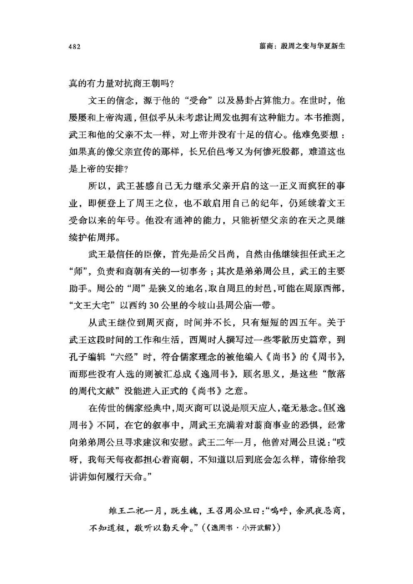
原书阅读器页 497原书物理 PDF 页 495印刷页 483
或者说，武王的惊恐反映的是这样一个事实：他并不完全相信父亲那些沟通上帝的传说。商王家族世代向上帝献祭，贡品丰富得无以复加，上帝难道不是会优先保佑商朝吗？翦商难道不是逆天悖伦之举吗？
兄长周发频频被噩梦缠绕，但周公其实也没有什么办法，只能尝试用梦来缓解。他宽慰周发说，母亲大姒曾梦到殷都生满荆棘，这是上天降下的商人将亡之兆，所以，虽然上帝享受了历代商王的祭祀奉献，但他不会因这种小小的实惠而偏袒商王。[[fn:1]]
为使自己的解释圆满，周公还重新定义了“德”的概念。在周公这里，“德”已不再是《尚书•盘庚》里商人的那种无原则的恩惠，而是所有人生活在世间的客观道德律，如孝悌长幼、中正恭逊、宽宏温直等。[[fn:2]] 上帝只保佑有“德”之人，也会替换掉那种没有“德”的君王或王朝，以有德之人代之。所以，只要武王努力修“德”，就一定能在上帝福佑之下战胜商王。
除却对上帝是否存在以及周邦实力的担心，武王还有一个隐忧：目前的盟友太少，只要不公开与商朝为敌，就不可能吸引更多的盟军，但过早公开，又可能招来灭顶之灾。这让武王左右为难，夜不成寐。
维王一祀二月，王在郢，密命。访于周公旦，曰：“呜呼！余夙夜维商，密不显，谁知。告岁之有秋。今余不获其落，若何？”
周公曰：“兹在德，敬在周，其维天命，王其敬命。远戚无十，和无再失，维明德无佚。佚不可还，维文考恪勤，战战何敬，何好何恶，时不敬，殆哉！”
经过周公一番解梦开导，武王勉强保住了信心，准备采取最稳妥的路线，“夙夜战战，何畏非道，何恶非是”。（《逸周书•大开武解》）
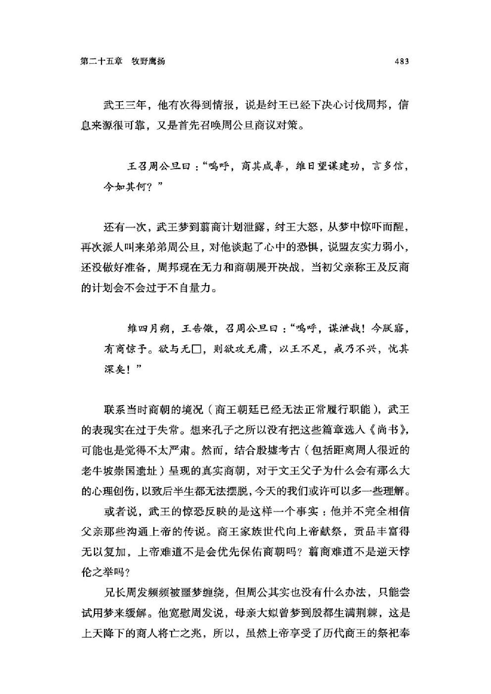
原书阅读器页 498原书物理 PDF 页 496印刷页 484
周文化和商文化很不同，族群性格也差别很大。商人直率冲动，思维灵活跳跃，有强者的自信和麻木；周人则隐忍含蓄，对外界更加关注和警觉，总担心尚未出现的危机和忧患。这是他们作为西陲小邦的生存之道。而在阴谋翦商的十余年里，这种个性更是表现得无以复加。
至于周公是否逃脱了那段殷都噩梦的纠缠，史书中没有记载，我们只知道，在被兄长召唤的每个黎明之前，他都从容清醒如白日，除了用餐时偶有失控呕吐的习惯，他没表现出任何异常。
显然，周公也已认真考虑过自己的定位。他知道自己无力独自承担父亲开启的这一正义而疯狂的事业，但这个使命及其带来的压力，注定要由他们兄弟二人一起承受。
他对“德”的阐释，只是作为一个普通人的美好愿望：不想杀人，也不愿无故被杀，渴望生活在一位圣明君王统治下的安定中。而他的兄长周发却必须成为那位有“德”君王，不然，整个周族都将死无葬身之地。
如果说武王的使命是成为帝王、翦商和建设人间秩序，那么，周公的使命就是做这位帝王的心理辅导师，塑造和维护他的神武形象，如此便于愿足矣。
第一次进攻
继位两年后，武王终于和商朝公开决裂。他先是到文王的墓地祭祀，然后率领周军东出潼关，一辆马车运载文王灵位，行走在中军主帅的位置，象征文王之灵仍在保佑周邦。按照文王在世的礼节，武王一直自称“小子发”。
军队沿着豫西古道而下，抵达洛阳北黄河边的盟津（孟津）。当时还没有洛阳城，盟津正是因“八百诸侯会盟”于此而得名。
西土早已不甘忍受商王朝的统治，只等有人率先举起反商义旗，追随者自会蜂拥而出。《史记》曰：“诸侯不期而会盟津者八百诸侯。”此时的所谓诸侯，并没有春秋时期的规模，还只是碾子坡遗址那种新石器水平的农业部落，人口一般在千人级别，能提供的兵力也不过区区百人。
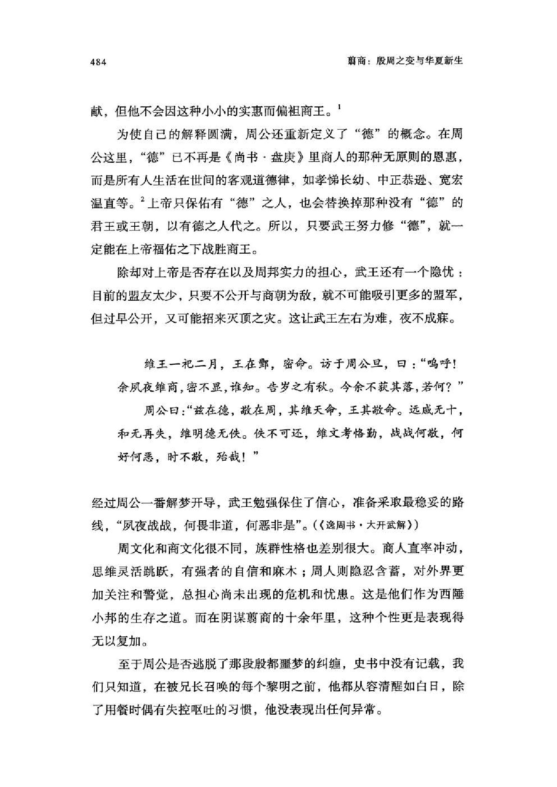
原书阅读器页 499原书物理 PDF 页 497印刷页 485
武王的军队可能在黄河南岸停留了一段时间，在造船的同时，亦等待各地赶来的盟军。此时是冬季，但黄河没有结冰，到一月初，联军才分批北渡黄河。
当武王的船只行驶到黄河中流时，有一条白鱼跳到了船舱里，武王亲手捉住它祭祀上天。在迷信的时代，任何偶发的事件都可能蕴含着天降的神意。渡河之后，据说有火光自天而降，停留在武王的帐篷上方，变幻成红色的鸟形。（《史记•周本纪》）
武王渡河，中流，白鱼跃入王舟中，武王俯取以祭。既渡，有火自上复于下，至于王屋，流为乌，其色赤，其声魄云。
《尚书•泰誓》是武王对盟军发布的讲话。泰，有宏大之意。可能在渡河前后，武王各有一次讲话。作为战前动员，武王在讲话中强调，商纣的各种恶行不可宽恕：
……弗敬上天，降灾下民。沈湎冒色，敢行暴虐，罪人以族，官人以世，惟宫室、台榭、陂池、侈服，以残害于尔万姓。焚炙忠良，刳剔孕妇。……斫朝涉之胫，剖贤人之心，作威杀戮，毒痛四海。崇信奸回，放黜师保，屏弃典刑，囚奴正士，郊社不修，宗庙不享，作奇技淫巧以悦妇人。[[fn:3]]
从商代考古看，诸如“刳剔孕妇”和“斫朝涉之胫”之类，从早商的郑州商城和偃师商城到中商的小双桥遗址，再到后期的殷墟，一直是商人祭祀的常态，西土各族人也早已见识过，但为何武王只把它说成商纣一个人的罪恶？
一种可能是，武王当初控诉的就是商朝的恐怖行径，但在周公当政时期，为了抹去商文化的阴暗面，修改了武王的讲话记录；另一种可能是，武王为了争取商人内部的支持者，所以只重点描绘纣王的残忍无道，所谓孤立极少数，拉拢大多数。
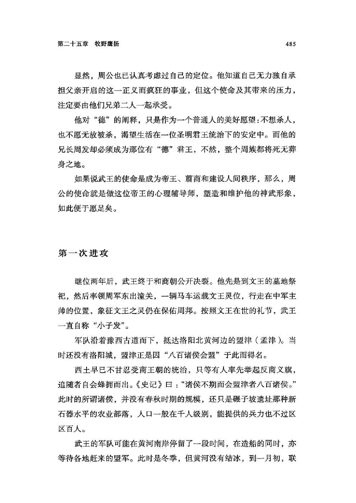
原书阅读器页 500原书物理 PDF 页 498印刷页 486
此外，武王讲话还强调了商纣的一个罪行，说他不愿举行祭祀，从而得罪了上帝和商朝历代先王：
乃夷居、弗事上帝神祇，遗厥先宗庙弗祀。
……郊社不修，宗庙不享……
上帝弗顺，祝降时丧。
这就是莫须有的指控了。纣王继承的正是其父帝乙制定的常态化“周祭”制度：用固定的祭祀日程表祭祀历代先王，哪怕王不在京城，也会有祭司代为奉献祭品；上帝（原本）只是商人的神，即使帝乙和纣王的“周祭”里没有安排上帝，但按照商人的宗教理念，奉献给先王的祭品自然有上帝的一份。
但武王必须指控纣王不敬神。因为在上古时代，这是最大的罪恶。既然要把商纣定义为万恶的独夫，他就肯定有这一条罪状。由此，周武王的“反叛”便有了宗教合法性：他是代表天上的上帝和诸神（历代商王）惩戒纣王，正所谓：“尔其孜孜，奉予一人，恭行天罚。”
经过这一番信誓旦旦的宣讲，诸侯皆曰：“纣可伐矣。”但稍后，武王却突然声称：“女未知天命，未可也。”意思是说，“天命”还没到讨伐的时候，于是，盟军各自班师回家。（《史记•周本纪》）结果，商、周两王东西对峙的局面又持续了两年。
这个转折很不符合情理。不过按现代人的理解，自文王“受命”翦商以来，不合情理的事情已经太多。我们只要知道，那是大地由无数莫测的鬼神统治的时代，所以，我们也不必强行为武王的这一行为做出解释。
武王的“盟津会盟”已经表明周人的灭商野心，也赢得诸多西土部落加盟。按说到此时，商纣理应正视来自西方的威胁，但他却还是没有采取任何行动。与此同时，商朝宫廷里的内斗却愈发激化。《史记•殷本纪》载，微子（纣王庶出的弟弟）数谏纣王不听后，就逃命躲藏了起来；尔后，纣王”剖比干，观其心”，“箕子惧，乃详狂为奴，纣又囚之”。在古史中，这些人都是商朝的忠良之臣，但以商朝当时的形势看，很可能这其中曾有人试图发动宫廷政变，推翻纣王。在殷都的动荡冲突中，有些商朝高层亡命出逃，《史记•周本纪》载：“太师疵、少师强抱其乐器而奔周。”
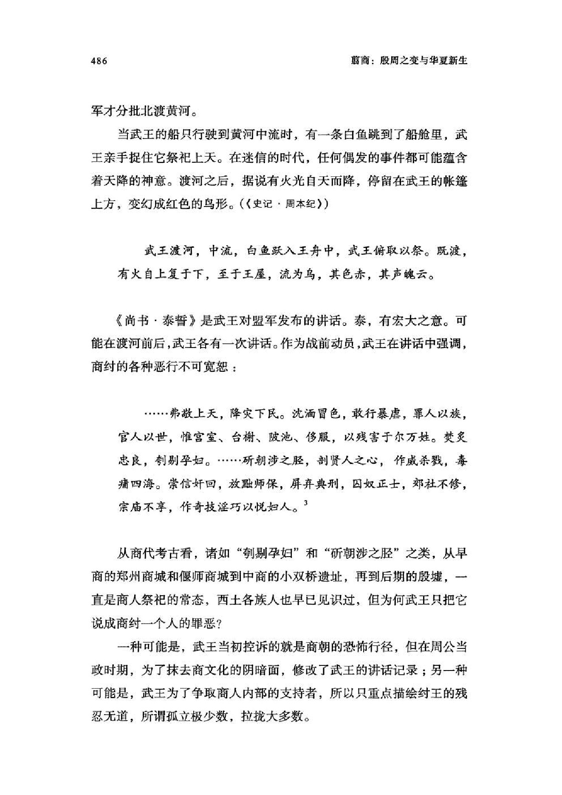
原书阅读器页 501原书物理 PDF 页 499印刷页 487
各种文献对比干之死的记载有所不同。在《史记・殷本纪》里，是纣王“剖比干，观其心”；在《楚辞•离骚》里，则为“比干菹醢” （被剁成肉酱）。根据《易经》的艮卦，这两者并不矛盾，商王杀重要人物献祭时有一套完整流程，剖胸取心和熏烧献祭发生在中间阶段，最后才把人牲剁成肉酱。伯邑考当年也经历了这样一个完整过程。还有些史料记载，连比干怀孕的妻子也难逃一死，甚至腹中胎儿还被扯出来让纣王检视：“纣剖比干妻以视其胎。”[[fn:4]] 看来，纣王杀贵族往往是全家，在《泰誓》里，武王就是这样抨击他的：“敢行暴虐，罪人以族。”
对现代人而言，剖腹取胎是极为残忍的行为，但它可能是商人献祭的常态。各商代遗址发现的大量人牲尸骨中，青年女性占一定比例，而其中应该会有部分孕妇，之所以从未发现有胎儿遗骨，很可能是在杀祭时被剖腹取出了。作为对比，正常的上古坟墓中常常可以见到死于难产或腹中有胎儿的女性尸骨。
综上，商纣末年，殷都贵族们已经处于一种难以置信的恐怖之中，因为即便在以鬼神血祭为常态的商文化里，也少有纣王这种热衷用显贵献祭的做法。可能这才是商朝失控和灭亡的直接原因，周人的威胁原本不值一提。
牧野甲子日
殷都动荡日甚，周武王感到翦商的时机来了。
盟津会盟两年后的公元前1046年，也就是武王继位第四年、文王受命第十一年，[[fn:5]] 他再度起兵东征。有好几种文献记载武王此次伐商的行军日程，但年份和月份皆有所不同。总的来说，武王此次起兵是在隆冬季节，决战则是在冬末春初。
总攻的前期工作在前一年底就开始了。武王三年十一月，周军主力先出发，但武王不在军中，领兵的可能是太师吕尚。他们的任务是先到黄河南岸扎营，与各路盟军集结，并肃清南岸可能出现的商军。与此同时，使者会将总攻信息通知所有同盟国。
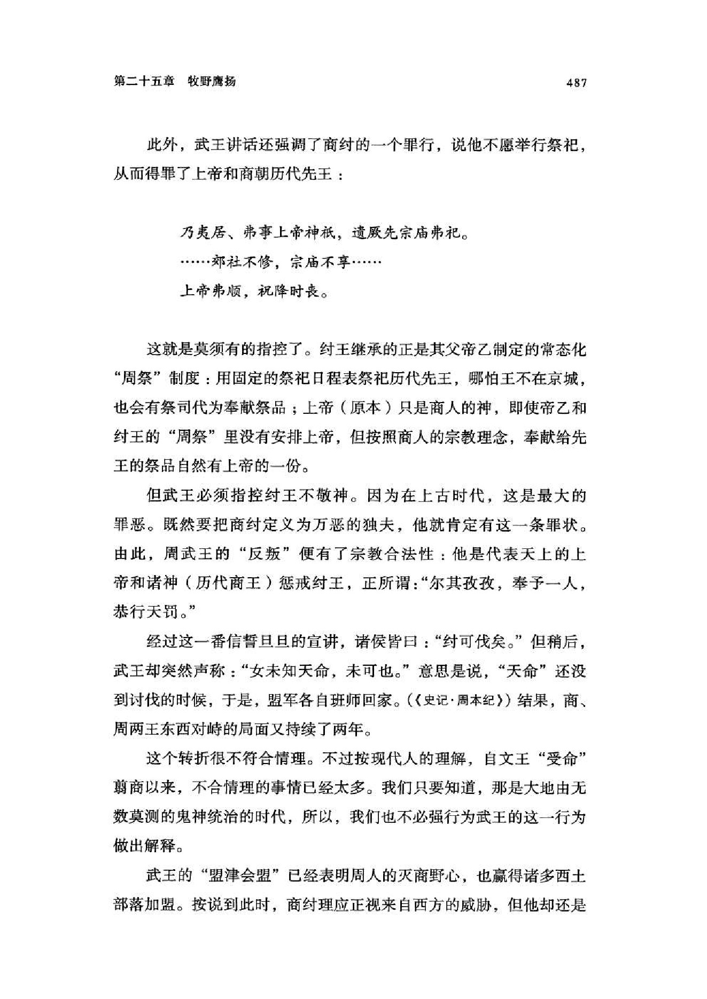
原书阅读器页 502原书物理 PDF 页 500印刷页 488
武王四年一月二十日癸巳，武王和少数臣僚从周原（宗周）出发。他轻车简从，只用了十四天便抵达盟津南岸的军营。此时，盟军已集结完毕，《史记•周本纪》载，周军总兵力为四万五千人，战车三百辆，和战车协同作战的“虎贲”有三千人。
这一次，周军来犯的消息终于引起了纣王的重视，他开始调动殷都及周边各族邑的武装，准备挫败西土之敌，进而扫荡他们在关中的巢穴。但此时殷都的动荡刚过去不久，动员的进度很是缓慢。
而西土盟军已在黄河南岸停驻一月左右，二月十六日戊午，盟军全部渡过黄河，一举进入商朝核心区。
河北平原上分布着很多商人族邑，按常理，盟军应当逐一将其攻占，把战线稳稳向北推进，但武王却突然加快节奏，并不理会沿途的商人据点，一路向北直指殷都。经过六天加急行军，二月二十一日癸丑夜间，盟军抵达殷都南郊的牧野。[[fn:6]] 这里是商王室蓄养牛羊的草原，地形平坦，商军集结地的营火已经遥遥在望。此时，两军都已侦知对方主力的位置，开始连夜整队列阵，准备天亮时一举消灭对手。史载，这是个多雨的残冬，盟军渡过黄河前后一直阴雨连绵，有些河流开始泛滥。而当两军连夜列阵时，又下起了雨。
（周武）王以二月癸亥夜陈，未毕而雨……布戎于牧之野。
二十二日甲子凌晨，规模较小的周军首先列队完毕，武王全身盔甲戎装，在阵前宣誓，这便是著名的《尚书•牧誓》。这篇讲话不到三百字，简洁，现场感极强。
武王先是左手执黄（铜）钺，右手挥动白色牦牛尾（白旄，统帅的号令旗），说：“西土之人，远来辛苦了！”
时甲子昧爽，王朝至于商郊牧野，乃誓。王左杖黄钺，右秉白旄以麾，曰：“逖矣，西土之人！”
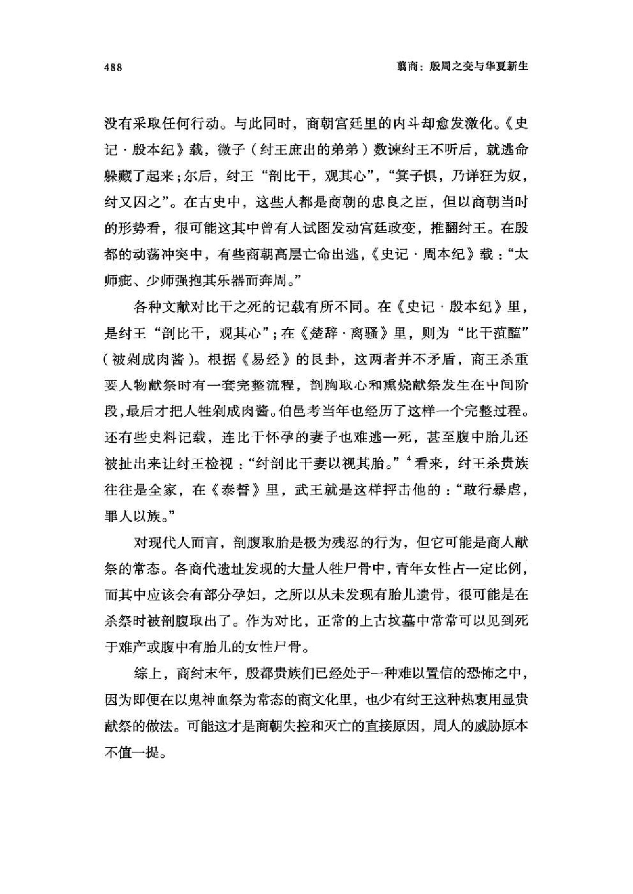
原书阅读器页 503原书物理 PDF 页 501印刷页 489
紧接着，武王一一点名麾下的盟友、将领、军官，直到“百夫长”，命令他们：“拿起你们的戈，连接好你们的盾牌，立起你们的长矛，现在，我要立誓！”
王日：“嗟！我友邦冢君御事，司徒、司马、司空， 亚旅、师氏，千夫长、百夫长，及庸，蜀、羌、髳、微、卢、彭、濮人。称尔戈，比尔干，立尔矛，予其誓。”
然后，武王简单列举了纣王的罪行：崇信妇人（妲己），不虔诚祭祀，不善待叔父、伯父和兄弟（比干、箕子、微子等人），重用各部族有罪和道德败坏之人，放任他们（如东夷的蜚廉和恶来父子）在殷都虐待百姓，恶行累累。
王曰：“古人有言曰‘牝鸡无晨；牝鸡之晨，惟家之索。’ 今商王受惟妇言是用，昏弃厥肆祀弗答，昏弃厥遗王父母弟不迪，乃惟四方之多罪逋逃，是崇是长，是信是使，是以为大夫卿士。俾暴虐于百姓，以奸宄于商邑。
武王自陈：“我周发，这次恭敬地代表上天惩罚商纣；今天的战事，不是六步、七步就能结束的，诸位努力！不是砍杀四次、五次、六次、七次就能结束的，努力吧，诸位！要凶猛，像虎、貔、熊和罴一样战斗！这里已经是商都城郊，如果战败，我们西土又将会回到商朝奴役之下。努力吧，诸位，今天不尽力，你是活不下去的！”
今予发惟恭行天之罚。今日之事，不愆于六步、七步，乃止齐焉。勖哉夫子！不愆于四伐、五伐、六伐、七伐，乃止齐焉。勖哉夫子！
尚桓桓如虎、如貔、如熊、如罴，于商郊弗迓克奔，以役西士，勖哉夫子！尔所弗勖，其于尔躬有戮！”
武王和他的同盟军都是“西土之人”，也就是世世代代为殷商提供献祭原料的羌人，大都有亲人在殷都被剔剥和烹食，所以每个人都知道，如果这一战失利，后果将会是什么。
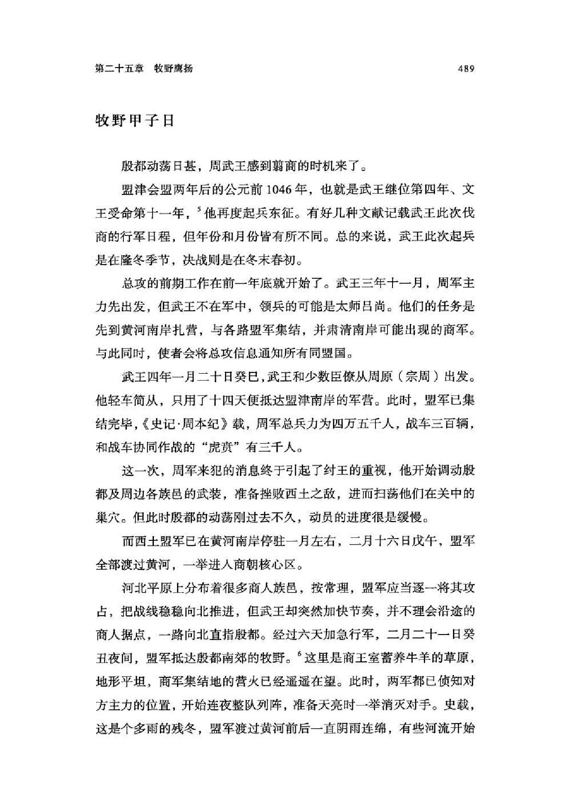
原书阅读器页 504原书物理 PDF 页 502印刷页 490
文献中还记载说，武王宣誓完毕即将入列时，袜子带却松脱了，周围侍立者无人上前，是武王躬身放下钺和旄自己系好的。周围人还说：“我等不是来帮人系袜子带的。”看来，阵前的武王是和各盟邦首领在一起，而非和自己的侍卫下属。他们是为了灭商而来的，并不是武王的私人属下。他们很在意这种身份区别。[[fn:7]]
天色渐明，雨势渐小，对面的商军阵列逐渐成形。周人史诗的描述是，敌军的戈矛像森林一样密集，所谓“殷商之旅，其会如林”。（《诗经•大雅•大明》）《史记》记载，商军总数为七十万人：“帝纣闻武王来，亦发兵七十万人距武王。”这一数字明显过高，[[fn:8]] 不过，商军数量远远超过西土联军是毋庸置疑的。
武王的阵前讲话虽信心十足，但此时正面临着两难的困境。他发起此次远征的前提，应该是有殷都内部联络人的密约：一旦两军对阵，联络人将趁乱除掉纣王以扭转战局，然后推选一位各方都能接受的新商王人选。
但殷都局势一日三变，最有能力取代纣王的人物，或死，或囚，或逃；而双方的大军都是加急赶赴牧野，在没有星月的暗夜和空前庞大的营地集结。很显然，一旦武王和殷都内应断了联系，没有了商人助战，以现在的实力对比，西土联军将被一边倒地屠杀。
不只是西土之人，即使商人贵族也尚未见识过这种规模的集结和大战。一个宗族的数百或上千名武士淹没在巨大的军阵中，就像森林中的一丛灌木难以寻找。
但武王没有别的选择，他只能相信父亲描述的那位上帝站在自己一边，只要全心信任他，父亲开启的翦商事业就能成功，正所谓：“矢于牧野，维予侯兴。上帝临女，无贰尔心！”（《诗经•大雅•大明》）
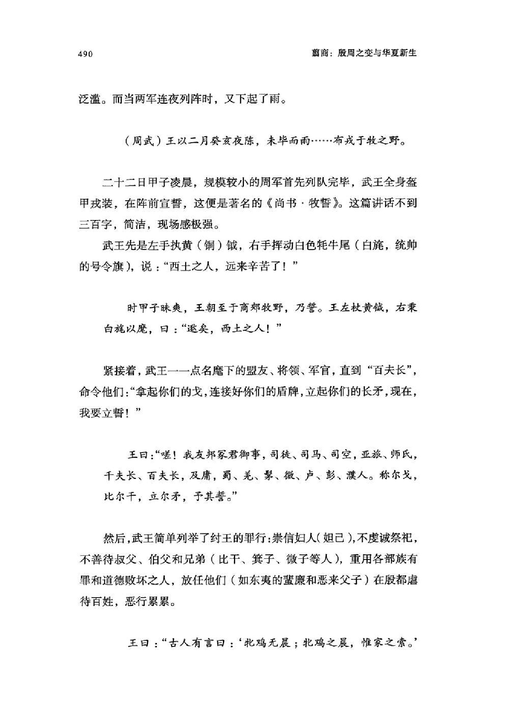
原书阅读器页 505原书物理 PDF 页 503印刷页 491
史书里，武王的第一个行动是派他的岳父兼老师和战略阴谋家“师尚父”吕尚“与百夫致师，以大卒驰帝纣师”。（《史记•周本纪》）即使抛开吕尚和武王的私人关系，此时他已年过六旬，须发花白，按理武王是不可能派他去完成这种任务的。而且也没人知道，为何吕尚就忽然忘记了所有阴谋、诈术和诡计，像一介武夫般怒发冲冠直向敌阵。
也许，他只是想改变羌人被作为人牲悬挂风干的命运，毕竟在殷都的屠宰场，他已经看得太多。
吕尚率步兵尚未接敌，武王便带着他的三百辆战车冲向商军阵列，他不能让岳父如此莽撞地送死，只能投入自己仅有的战车吸引敌军。按正常接战程序，先是会有暴雨般的青铜箭矢射向他们，然后是数倍的商军战车席卷而来，将他们碾压成泥。可以说，这场战斗从一开始，武王一方就没有任何章法和战术可言。
但商军阵列却突然自行解体，变成了互相砍杀的人群。或许是看到周军义无反顾的冲锋，商军中的密谋者终于鼓起勇气，倒戈杀向纣王中军。接着，西土联军全部投入了混战。
后世的周人史诗说，“商庶若化”，即是说，商军队伍就像滚水冲刷的油脂，瞬间溃散，融化。[[fn:9]] 喧嚣逐渐沉寂，雨停了，沟壑的积水被血染红，尸体与兵戈和盾牌沉浮其间。在后人的记忆里，那个清晨的牧野，“血流漂杵”。
当淡淡的阳光穿透晨雾洒向原野间的纵横尸骸，近六百年的商王朝已经终结。太公则在那个黎明变成一只鹰盘旋在牧野上空，而积云散去的清晨，自此被周人称作“清明”。
维师尚父，时维鹰扬。凉彼武王，肆伐大商，会朝清明。（《诗经•大雅•大明》）
殷都迎来征服者
商军主力毁于牧野一战，武王的西土联军则只有轻微的损失，而且还获得商人“谋逆”部族的投诚。在史书中，这些与周人暗通款曲的商人氏族一直隐藏在迷雾中，从未被列举出姓名。
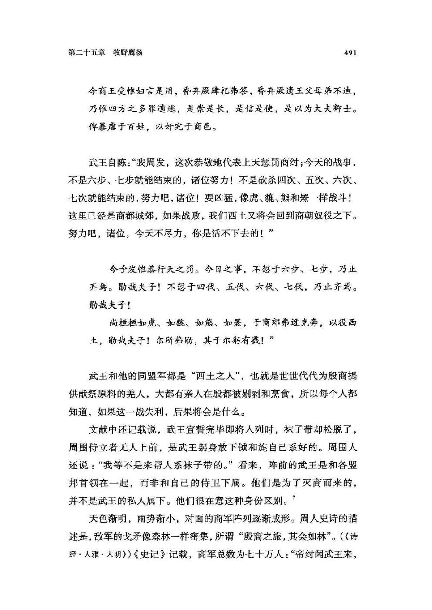
原书阅读器页 506原书物理 PDF 页 504印刷页 492
但无论如何，纣王-帝辛的王朝已走向终结。于是，武王手执一面“大白旗”（太白旗），再次下令整编队列。在五行星中，太白为金星，而“太白主中国”（《史记•天官书》），所以武王用的可能就是缴获的纣王帅旗。
西土各邦首领也开始意识到，武王已取代纣王的地位，不再是和
他们平起平坐的同盟者了，他们只能屈膝跪拜[[fn:10]]，武王则以手抱拳作揖相答：
诸侯毕拜武王，武王乃揖诸侯，诸侯毕从。（《史记•周本纪》）
然后，武王率队伍向殷都开进。
此时，纣王已随败兵逃回殷都，然宫廷秩序已荡然无存，他也没有了纠合兵力再战的信心。不过，纣王采取的是另一种对抗方式，傍晚时分，他登上储藏宝物的“鹿台”，把贵重玉器堆在身边，佩戴五枚“天智玉”，点火自焚而死。
纣走入，登鹿台，衣其宝玉衣，赴火而死。（《史记•殷本纪））时甲子夕，商王纣取天智玉琰五，环身，厚以自焚。（《逸周书•世俘解》）
就这样，甲子日的清晨，商朝大军覆灭；入夜，商王殒命。一天之内，中土世界天翻地覆。
纣王焚身而死，后世人大都将其理解为一种走投无路的自绝。其实，按照商人的宗教理念，这是一场最高级的献祭——王把自己奉献给了上帝和祖宗诸神。商朝开国之王成汤（天乙）曾经试图这样做，而商纣王则首次实践了它。
〔按语：有道理〕
纣王曾给诸神贡献过王族和方伯，现在他贡献了自己，带着人间最珍贵的宝玉升往天界，成为具有上帝神性的“帝辛”，然后，他自然要给叛逆的周人降下灭顶之灾。
〔按语：年纪不饶人〕
次日晨，周人联军开到殷都，在郊外设下营地。纣王身死的消息已经传开，武王和他的臣僚们现在要面对的是如何接收商朝的庞大遗产，让商族人接受亡国的事实，尽量避免他们因走投无路而再次暴动。
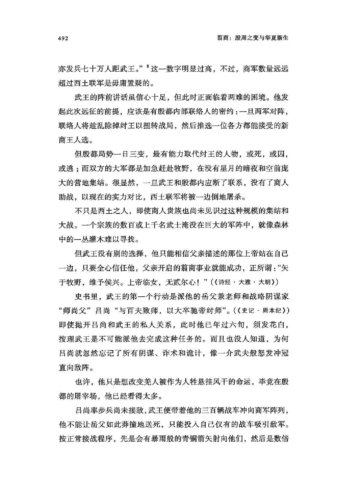
原书阅读器页 507原书物理 PDF 页 505印刷页 493
承认失败的商朝显贵已在郊外列队迎候。武王的群臣向商人宣告：“这是上天降下的福佑！”商人皆下跪，“再拜稽首”（以头叩地两次），武王也走下战车向商人叩拜以为回答。（《史记•殷本纪》）
后世有注家认为，司马迁的这段记载不准确，武王伐商是正义之举，怎么可能会向商人回拜？他昨日在牧野战场对盟友的跪拜也只是作揖为答，不可能对商人如此恭敬过礼：
武王虽以臣伐君，颇有惭德，不应答商人之拜，太史公失辞耳。寻上文，诸侯毕拜贺武王，武王尚且抱揖，无容遂下拜商人。（司马贞《史记索隐）
这种评论，是因为没有看到商人内部倒戈对战局的重大影响：此时商族的规模仍非常庞大，作为征服者的武王丝毫不敢掉以轻心。
对武王来说，最首要的工作是处理纣王烧焦的尸体。他熟悉商人的宗教思维，知道必须用法术对抗法术，化解纣王自我献祭可能带来的后果与流言，方法则是表演一次战斗和处斩，展现纣王被俘和被杀的全过程：周军直入鹿台宫，武王在战车上对着纣王尸体连射三箭，然后跳下车，用“轻吕”短剑砍杀尸体，最后用铜钺斩下纣王人头，悬挂到太白旗之下。（《史记•殷本纪》）
纣王的两名宠妃已上吊自杀，其中一个是妲己。没人知道她们是否自愿。按照同样程序，武王“又射三发，击以剑，斩以玄钺”，将其头悬挂在小白旗下。
然后队伍返回郊外军营，一路展示旗杆上的人头，宣称这是武王的战果。为了制造舆论，平息谣言，这种仪式性表演极为重要。
纣王囚禁的商人贵族皆被释放，其中最显赫的是箕子——武王命召公奭去监牢释放和安顿箕子。商朝全境尚未平定，武王必须争取尽可能多的商朝贵族。当初，这些商人反对派只是想借助周人兵力以除掉肆意妄为的纣王-帝辛，然后换一位新的商王。但文王和武王的野心远不止于此，他们要的是永远取代商朝的统治。如今，商军主力虽已覆灭，但投降的商人各宗族势力依然很大，武王还需要借助他们平定商朝全境，双方之间定会有一番谈判博弈。
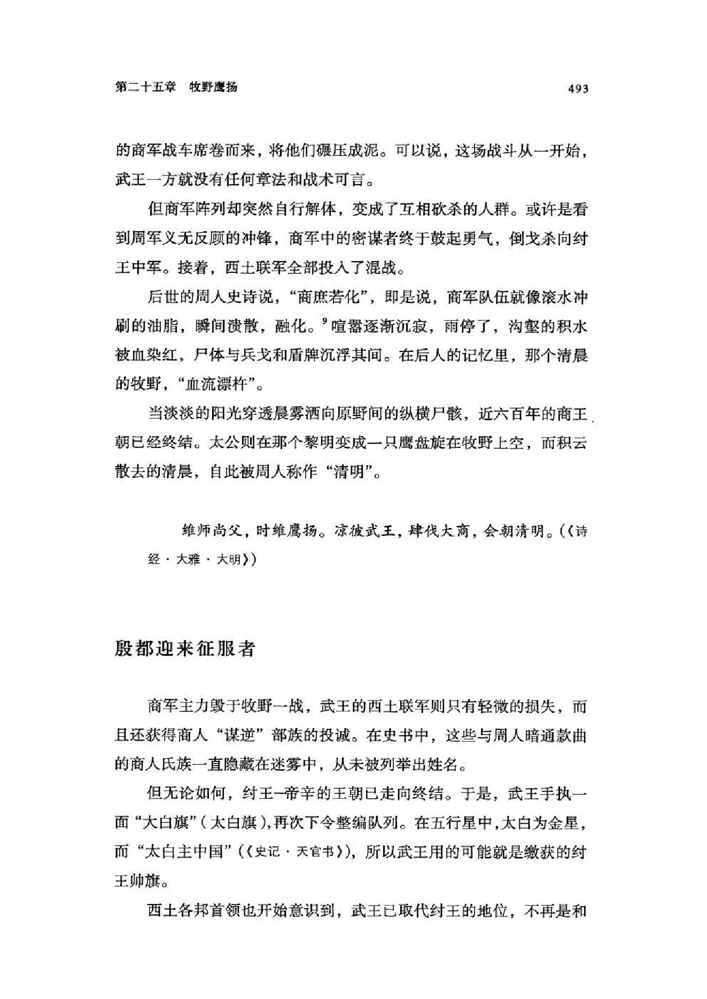
原书阅读器页 508原书物理 PDF 页 506印刷页 494
就这样，武王和刚获释的箕子便有了一番长谈，后被西周时人整理成了《箕子》。但很遗憾，这篇文章后来遗失了，只在《逸周书》中保留了篇名。[[fn:11]] 也可能是《箕子》中所载的双方谈判内容过于露骨，且与后来西周朝的官方叙事口径大不相同，所以被销毁了。
不过，武王和箕子的这次长谈应该是达成了一些基本共识，比如，纣王的死党需要全面肃清，商人的王朝可以暂时保留，以及周朝军队要长期驻扎殷都等。按照此种安排，商和周是东西并立的两个王朝，但商必须在周的军事控制之下。
此外，武王还必须澄清：上帝在人间的统治权已经完全转移到周朝，也就是到了武王周发之手，今后的商王不再和上帝有任何联系，也不能再用“帝”的尊称。为此，他需要在商王祭祀诸神的“社”（神庙）里举行象征王朝更迭的交接仪式。[[fn:12]]
周人先是维修了神社和纣王宫殿，清理了道路。典礼开始前，一百名武士扛旗帜开路（“百夫荷罕旗以先驱”），武王之弟周振铎（后封于曹，称“曹叔”）乘先导车，周公旦执大钺，毕公高（后封于毕，称“毕公高”）执小钺，分立武王两侧，散宜生、泰颠和闲天各执“轻吕”短剑簇拥武王，卫队则跟在后面。
进入神社后，武王弟周郑（后封于毛，称“毛叔”）、周封（后封于卫，称“卫康叔”）和召公奭（封邑于召，称“召公”）分别手捧明水，铺好草席，拿着玉帛，吕尚则牵着献祭的牛。一名可能来自商朝的礼仪官尹佚负责宣读给上帝的汇报词：“殷之末孙季纣，殄废先王明德，侮蔑神祇不祀，昏暴商邑百姓，其章显闻于天皇上帝。”大意是，殷商王朝的末代子孙辛受已经丧失先王成汤秉持的明德，不敬神祇，荒废祭祀，残暴对待商国民众，所有这些罪行都已在这里书面报告给“昊天上帝”！
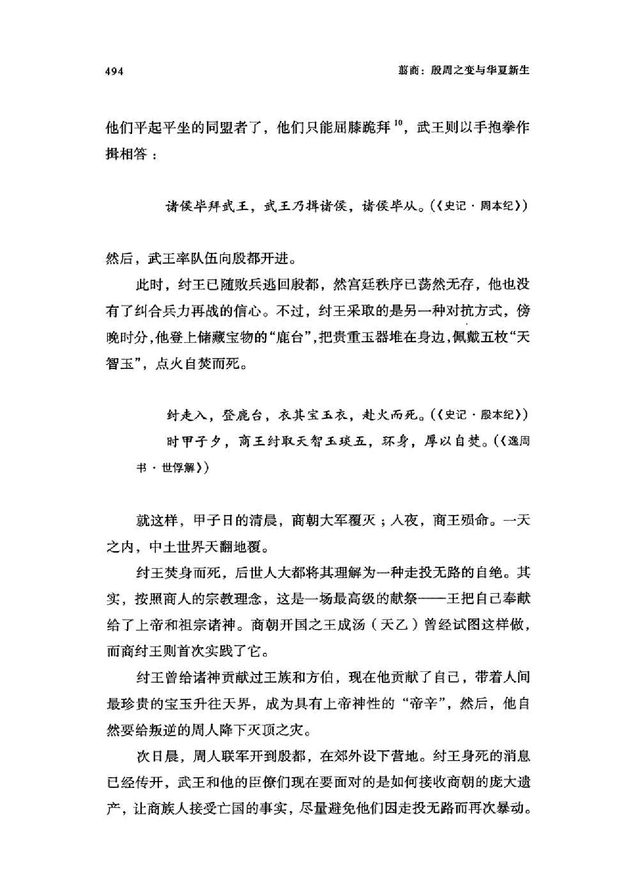
原书阅读器页 509原书物理 PDF 页 507印刷页 495
接着，武王向代表上帝和诸神的灵位下拜两次，宣称：“本人承担天帝赋予的命令，变革了殷商的统治，这都是上天的意志！”
最后，众臣奉献祭品。在《史记》中，典礼至此就结束了。[[fn:13]]
其实，武王还有一通针对商朝贵族的长篇讲话，后来被收入了《逸周书》的《商誓解》。和牧野战前的讲话一样，武王先依次列举发言的听众，从殷商朝廷老臣（“伊旧何父”）到“太史比、小史昔”，再到百官和“里居献民”（殷都各族邑中的商人）。
武王还是用语气词“嗟”开场：“尔等众人，我知道你们都尊重天命，我来这里，就是执行上帝威严的命令和惩罚，现在，对你等发布新的命令，都恭敬听着，朕这次要从一说到十，把道理都讲明白！”
这种语气，和《尚书•盘庚》中商王对臣下的呵斥和威胁很是类似。商人极度信仰鬼神，而且认为人和鬼神的唯一联系便是祭祀，因此，为了让商人接受商王朝已经被鬼神抛弃，在这里，武王使用的是商人习惯的逻辑。
武王先是说：“当初，上帝教诲周族的始祖后稷播种百谷，天下民众因此获益；商朝的历代先王祭祀上帝（与先祖），用的也都是后稷培植的谷物，因为这个原因，上帝和历代商先王决定让西土周族显赫起来！”
在昔后稷，惟上帝之言，克播百谷，登禹之绩，凡在天下之庶民，罔不惟后稷之元谷用蒸享，在商先誓王，明祀上帝， □ □□□，亦惟我后稷之元谷，用告和，用胥饮食，肆商先誓王维厥故，斯用显我西土。
接着，武王仍把矛头对准纣王一人：“因为商纣的种种罪恶，上帝很不满意，于是命令朕的先父文王'消灭掉商朝那个多罪的纣！' 我周发作为晚辈，不敢忘掉上帝之命，在甲子这天，终于执行了上天的伟大惩罚。这是上帝的大命，我也不敢违抗，你们更要恭敬！当初在西土时，我早已说过，商朝的所有人都没有罪过，只有独夫一人。我现在消灭了他，自然会福佑尔等，你们这些商朝百姓和都城的君子，以后都要服从周的命令！（如果有什么异常情况）你们商人各家族的邦君都应该报告给我，我对待你们的邦君就像周朝的邦君一样……”
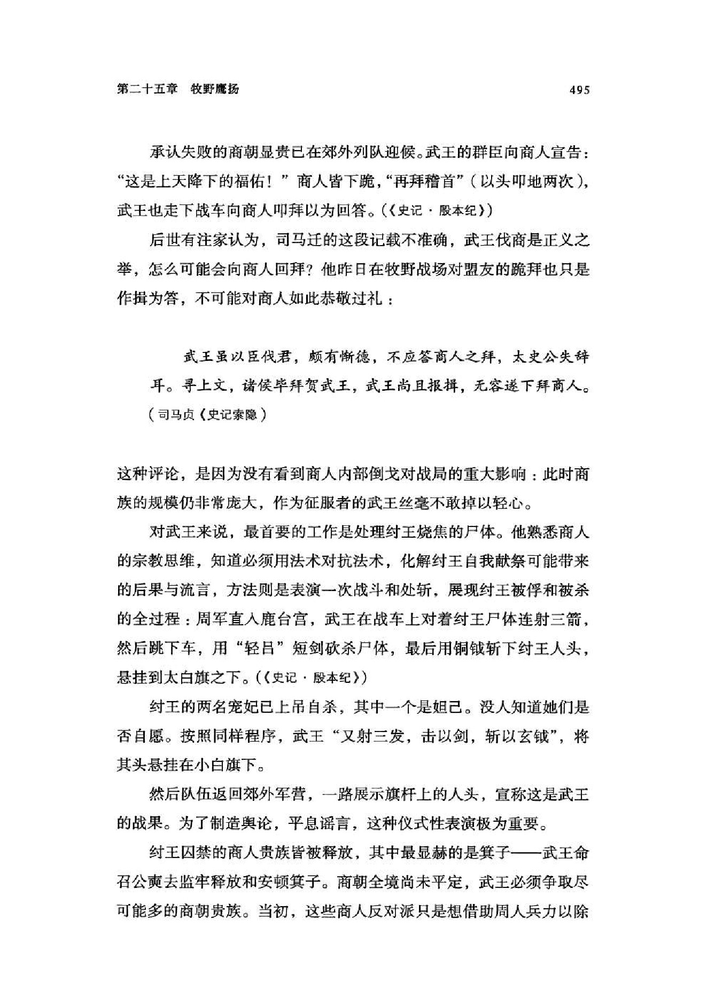
原书阅读器页 510原书物理 PDF 页 508印刷页 496
今在商纣，昏忧天下，弗显上帝，昏虐百姓，弃天之命，上帝弗显，乃命朕文考日：理商之多罪纣。肆予小子发弗敢忘，天命朕考，胥翕稷政，肆上帝曰：必伐之。予惟甲子，克致天之大罚，口帝之来，革纣之口，予亦无敢违大命。敬诸！
昔在西土，我其有言，胥告商之百无罪，其维一夫，予既殛纣，承天命，予亦来休，命尔百姓里居君子，其周即命，□ □ □□□□□□□□□□□□□□□□□□□□□□ □ □ □ □，尔冢邦君，无敢其有不告，见于我有周，其比冢邦君……
最后，武王并不讳言周邦远比商朝小，自称“斯小国”，因为他的自信源于上帝的支持：“既然上帝已经钟意周邦，我们这个小国也不会懈怠天命。我这次说的话，如果你们不放在心上，我还会回来执行上帝的惩罚！你们要恭敬，好好听从我的话，我不会再说第二遍了！…
这篇《商誓解》的文辞，比武王在《尚书》和《逸周书》中的其他讲话更古奥难懂，却和商代先王的类似讲话很像。另外，武王当时可能是用商族语讲话，后世传抄人未必全懂，所以有很多错误和脱漏。尽管如此，我们还是可以从《商誓解》中看出，在成功灭商之后，无论是宗教理念还是语言行文，周族上层仍然需要用商人能理解和符合商人习惯的方式来宣讲周朝取代商朝的合法性。
在这之前，周族首领就已经在一定程度上“商化”了，对他们来说，语言交流和表达的难度不算大，但要用商朝人的宗教理念来解释周灭商，则需要更深地进入商人的宗教思维。正是在思考这个问题的过程中，武王对商人宗教的依赖也越来越强，可以说，灭商使得武王更加“商化”了。[[fn:14]]
周武王的人祭大典
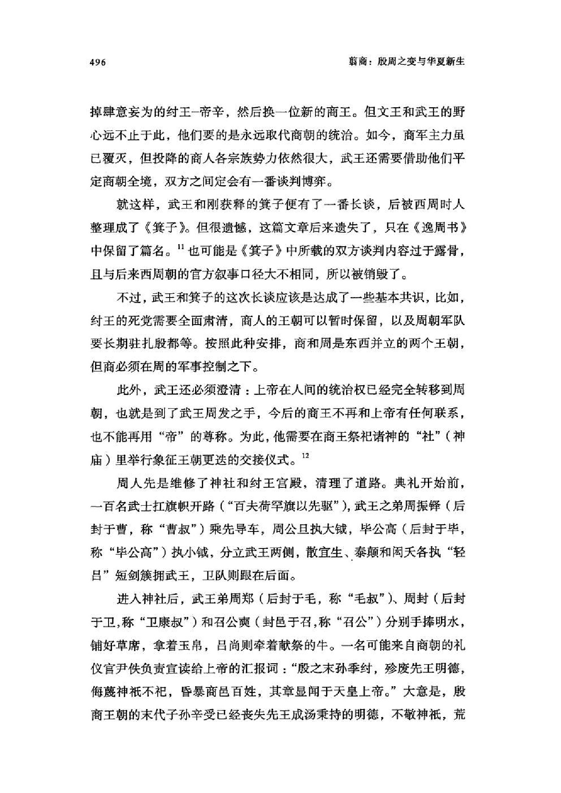
原书阅读器页 511原书物理 PDF 页 509印刷页 497
在镇定殷都的同时，武王还派出多支部队去肃清顽抗的商人。
出征的将领，除了吕尚，多数并不著名，如侯来、陈本、百韦，还有一位叫吕他，可能是吕尚的儿子中的一个。征伐的目标有越戏方、磨、宣方、蜀等，虽不能确定是何地，但这些部队都在一个月内相继返回殷都，看来行程不会太远，应该主要是黄河以北商人族邑最为集中的地区。陆续被斩或俘的商人首领有霍侯、艾侯和佚侯，俘获战车近千辆。
据《逸周书•世俘解》记载，被消灭的“九十有九国”，主动投降的“服国六百五十有二”，累计斩首十一万多，俘获三十多万人。算下来，每个被消灭的族邑平均损失四千人左右。这些数字肯定有炫耀战功造成的夸大。
经过一个多月的征伐，到四月初，周人已基本控制黄河以北地区，加上之前已经占领的晋南和豫西，商朝统治区大部已经平定。尚未征服的是东南方的夷人部落领地，包括山东地区、豫南以及相邻的苏皖地区，那里还分布着或疏或密的商人殖民城邑。它们没有实力扭转中原的改朝换代，武王暂时也无法分身去一一征服它们。
为了显示周朝的武力，让商人不要再生非分之想，武王还在商王的田猎区进行了一次大规模围猎。这是历代商王训练部队、炫耀武力和震慑蛮夷的传统仪式，在甲骨卜辞里有很多记录。
商人崇尚武力，王者必须展示自己的勇武方能让臣民畏服。在这方面，武王的表现毫不逊色，猎获的野兽几乎能堆成一座小山。
武王狩：禽虎二十有二，猫二，糜五千二百三十五，犀十有二，氂七百二十有一，熊百五十有一，罴百一十有八，豕三百五十有二，貉十有八，麈十有六，麝五十，糜三十，鹿三千五百有八。[[fn:15]]
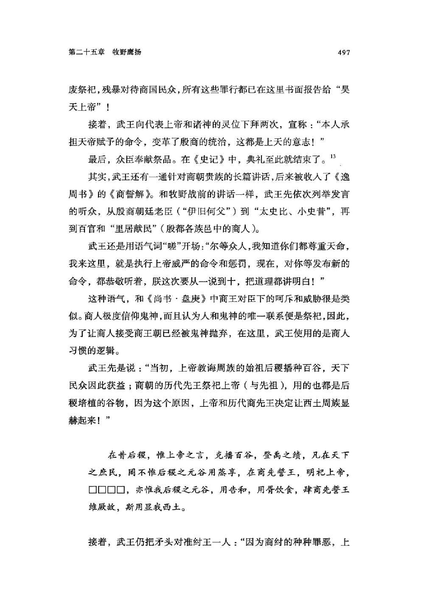
原书阅读器页 512原书物理 PDF 页 510印刷页 498
十几年前，纣王曾到关中的帛地行猎，这才有了周昌觐见和进入殷都的机会，以及后续一系列天崩地解的变革。如今，则是西土之人在商王的苑囿里驰骋。
武王还在殷都设立了周庙，用商人典礼祭祀上帝以及周族的列祖列宗。很有可能是用商朝的宫殿改造的，但具体位置已经不详。
四月二十二日庚戌，清晨，武王在殷都周庙举行盛大的燎祭。[[fn:16]] 乘车驾到之后，他站在宗庙南门外，由史臣向上帝宣读献祭的通知，请上帝莅临飨宴。
先是给一百名“大亚臣”（纣王死党，高级武官）换上专门的祭服（“佩衣”），由武王亲自献祭。执行的方法是“废”，就是砍断手脚，任其在血水中翻滚、哀嚎——他们的叫声要上达天听，这样上帝才会满意地享受祭品。
然后由太师吕尚献祭另外四十人，他们是忠于纣王的商人氏族首领（家君）、占卜官（贞师）、司徒和司马等小官吏。
人牲要挣扎到临死才会被砍下头颅，然后将其搬运到宗庙内献祭，其中有些尸体可能还要放到大鼎里烹煮。之后是商王家族的人头，纣王的人头悬挂在大白旗下，妲己和另一个妃子的人头则挂在一面红旗之下，由太师吕尚扛着这两面人头旗帜进入宗庙。
所有新旧人头都会被扔到火堆中焚烧，“燎于周庙”，任由焦香的烟气升入云端。这是上帝在天界享用祭品的方式。
后面五天，祭祀一直在举行。
二十三日辛亥，祭祀周先祖。先从古公亶父（太王）开始，接着是其长子泰伯（太伯）、次子仲雍（虞公）和三子季历（王季），再是文王和伯邑考。在乐队的伴奏之下，他们的灵位被依次搬运到祭坛之上，由武王手持铜钺向祖先报告殷商的罪恶已经得到抵偿（“维告殷罪”）。最后，“荐俘殷王鼎”，也就是在商王的大鼎里烹煮俘虏，但数量不详。
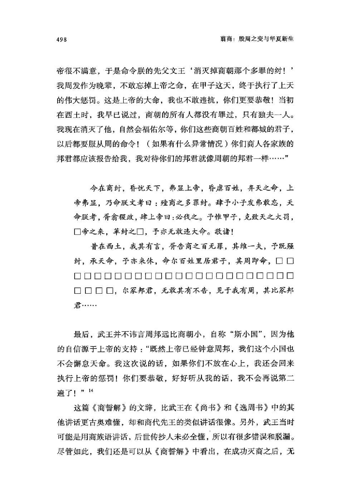
原书阅读器页 513原书物理 PDF 页 511印刷页 499
二十四日壬子，武王换上天子专用的“衮衣”来到宗庙，这象征他已经是正式的王朝主人。这天献祭的内容不详。
二十五日癸丑，献祭了一百名纣王麾下的武士（“荐殷俘，王士百人”）。武王手执铜钺和戈。乐队全程演奏。可能是武王亲自献祭。
二十六日甲寅，武王身披红白战袍在牧野战场祭祀战死的盟军，乐队演奏的是万舞的乐曲。这是商人贵族练习用钺作战的乐舞，看来已经被周朝接受。
二十七日乙卯，乐队演奏“崇禹生开（启）”（这可能是表现大禹的儿子启开创夏朝的音乐），武王借此宣告自己册立太子周颂的决定。周颂此时可能只有两三岁，在他之前，邑姜只生育过女儿。
仪式上，首先奉献的是侯来、陈本等征伐周边斩获的首级，并搭配现场屠宰的牲畜，“断牛六，断羊二”；然后向天（上帝）和后稷献祭，用的是牛“五百有四”头；再向其他百神、水土之神献祭，用猪、羊等牲畜共“三千七百有一”头。这种规模的献祭，堪比二百年前的武丁王。
传世史书几乎从未记载过上古有人祭行为，所以《逸周书•世俘解》记载的这些周武王实行人祭的记录才会显得颇为惊悚。但考古展示的商代（以及更早）各种人祭遗存和甲骨文记录，与《逸周书・世俘解》的内容非常吻合，可以说，武王的人祭大典完全继承了商代的人祭和牲祭传统。
此外，《逸周书•世俘解》还提供了一个信息：在举行人祭仪式的时候，也会演奏音乐。这是甲骨卜辞没有记载的内容。
那么，武王的这次祭祀是一次复仇的特例，还是常态化地接受了商朝的人祭宗教？从《逸周书》记载的武王表现看，很可能是后者。文王创制关于上帝的宗教原理，周公探索关于“德”的理论创新，但武王却与他们不同，他没有父亲的创新能力，也从未真正信服弟弟的理论，所以只能沿用强大的商朝宗教传统。
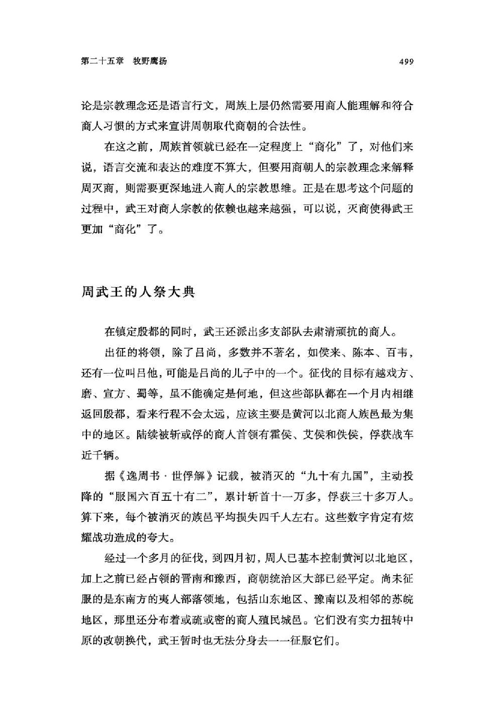
原书阅读器页 514原书物理 PDF 页 512印刷页 500
换句话说，在翦商的过程中，武王自己也完成了商化。
周公自我献祭
周人和投降的商人贵族达成的善后妥协是：一，由纣王的儿子武庚禄父继任商王，统治商朝旧疆。文王在《易经》的蒙卦中记载的那个懵懂少年（“童蒙”），现在大约二十多岁。二，周朝在殷都和周边地区部署驻防部队，由武王的三个弟弟管叔周鲜、蔡叔周度和霍叔周处指挥，负责监督殷商旧地的动态，防止叛乱再起，所谓“三监”。
至于较早就和周文王家族结缘的箕子，并没有在新的殷商朝廷获得职位。可能是因为他资历老，或者野心较大，所以周武王比较忌惮，担心把他放在殷都会难以掌控。《史记•宋微子世家》载，武王把箕子分封到了朝鲜：“于是武王乃封箕子于朝鲜而不臣也。”但商末周初应该还没有朝鲜这个地理概念。箕子可能是被安置在了河北平原东北部，甚至辽河流域，总之要远离殷都宫廷。
然后，武王班师返回关中。虽然已经征服商朝并建立周朝，但武王周发还是未能获得信心。商族人口实在太多，已经投降的未必甘心失败，还有许多尚未征服的商族方国散布在东南夷人之中，一旦叛乱再起，会很快发展成燎原之势。
虽然武王一直声称是父亲文王获得上帝的天命，尔后才有周朝灭商的壮举，但其实自己对此一直难以确信——上帝从未降临在他面前。当初，父亲独自躲在西厢房里一次次获得上帝的当面教导，而自己已经拥有天下，但为何上帝从来不现身？尤其是，商纣王用自焚献祭诸神，他周发又如何提供更能打动诸神的礼物？
《逸周书•度邑解》曰：“维天建殷，厥征天民，名三百六十夫，弗顾，亦不宾灭，用戾于今。呜呼于忧！”意思是说，商朝开国数百年，王族进入天界的“天民”有三百六十人，如今人间虽然改朝换代，但他们依旧徘徊在殷都上空，随时可能给周人降下灾戾，这是何等的隐忧！以此对照殷墟甲骨卜辞，并没有发现与武王所担忧的“商族拥有三百六十位天民”相应的内容。所以，这很可能是帝乙和帝辛两代商王“周祭”制度的传闻流变：周祭以一年、十二个月、三百六十天为单位，很容易被理解成每天祭祀一位神灵，每位神主管一年中的一天。
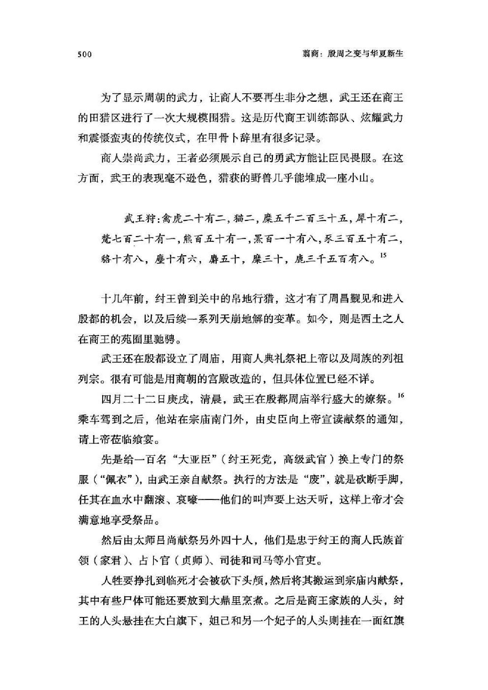
原书阅读器页 515原书物理 PDF 页 513印刷页 501
再就是，商王朝拥有无数高超的技术，而周人只是个后起的小学生，就连武王使用的文字都是商人创造的。商的力量几乎充斥在世间一切人造之物上，无可逃避。那么，像商朝这样戏剧性的崩溃和剧变会不会也随时发生在周朝和自己身上呢？对武王来说，那操纵人间的神意实在是无法捉摸。
自从灭商之后，武王经常患病，身体每况愈下。他的儿子不多，正夫人邑姜生子则更晚，太子周颂还是幼儿，看不出有上帝福佑的迹象。有一次，武王抱病离开关中，去巡视征服的领地，待接受各方国君侯在殷都郊外的朝拜后，又上太行山，眺望这座巨大而邪恶的都邑，叹息说：“呜呼，不擅长应对上天，一日之内就会丧命亡国。实在是让人可怕，不能忘啊！”周公旦这次没有随行。返回镐京的路上，武王身体已经难以支持，整晚整晚地睡不着。他预感自己时日无多。刚抵达镉京，武王就让贴身侍卫小子去报告周公。于是，周公赶来询问：“王已经积劳成疾，怎么还无法入睡？”
武王让弟弟坐定，谈起了自己忧心的身后事：“商朝虽然在各种诡异的征兆之下覆亡了，但他们的诸神仍在天界虎视眈眈；那些曾经臣服于纣王的商人，无时无刻不在想着复仇，把我们从西土抹去。我本来想找到上天保佑我们的方法[[fn:17]]，但我的生命不会太长，这个工作只能留给你了。”
武王还说：“我无法完成先祖留下的事业。就像肚子饿了才想到种田一样，我现在的工作不做好，就会连累先祖，无法让他们在上帝那里得到显赫的位置[[fn:18]]。在我死后，王位就由你来继承，这件事已经没有别的选择，连占卜也不用了。你如果做不好周王的工作，以后也无法面对我和列祖列宗。我相信你不会那样。”
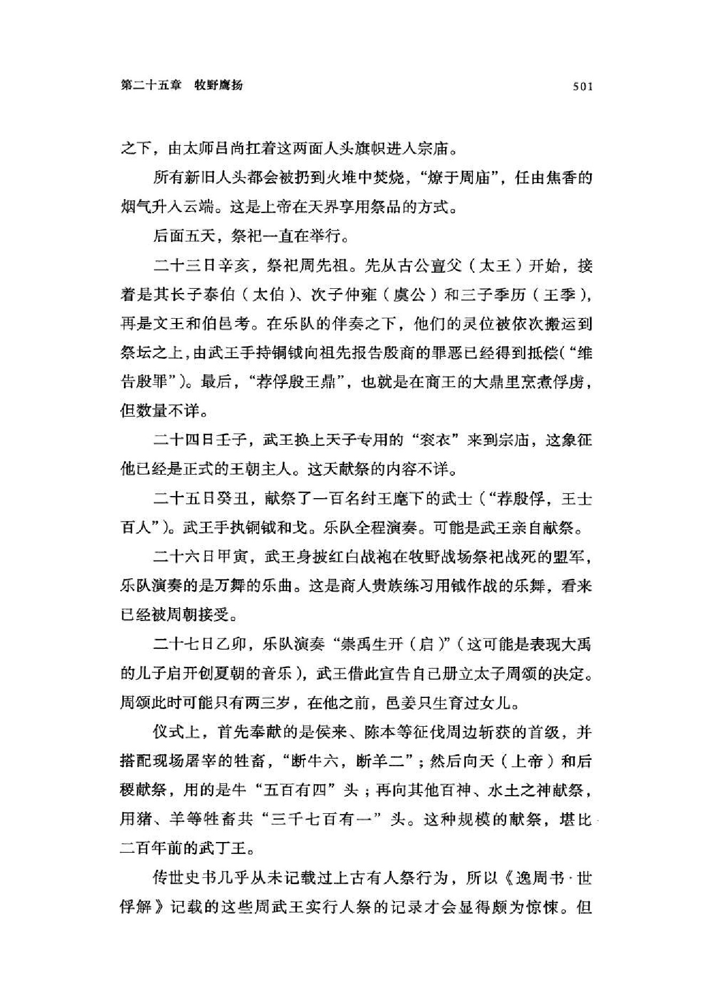
原书阅读器页 516原书物理 PDF 页 514印刷页 502
周公旦听到这些，非常惊恐，一直哭泣不能说话。武王继续说：“呜呼，周旦！我想夷平那殷都，只能依靠天的助力。我已经考察过了，在黄河的支流洛河和伊河之间，有一块向阳的盆地，它当初是夏朝人的都城，离天很近了，就给它叫‘度邑'（向天界过渡之城）吧。”[[fn:19]]
武王的这番话有很多缺环和跳跃，恐怕不是后世传抄中的偶然脱漏，而可能是谈话内容过于露骨，所以也就不可能在正式文本里保存下来。
王位兄终弟及，这在商朝很常见，武王有这种考虑也不算出格。但武王的兄弟很多，都已经接受过翦商战争的锻炼，而周公旦并不以勇武著称，为何会被武王选择为继承人？
可能主要是因为他的自信：周公对上帝和鬼神有自己一套基于“德”的理解，曾无数次用这套理论宽慰从噩梦中惊醒的兄长。事实上，武王基于自己的生活经验，从未真正接受过周公的理念，但武王知道，在周人中，只有周公在试图挣脱商人的宗教，不再对那些商人的鬼神战战兢兢，顶礼膜拜。武王自己无法摆脱，但他认为或者说希望周公能找到出路。
对于新建立的周朝，武王病危是一场重大危机。吕尚，另一位翦商事业的规划师，也已经垂老多病，自从殷都归来之后，他就很少在朝廷活动中出现。
但周公真的有一套成熟的宗教解决方案吗？
儒家经典《尚书•金滕》载，在武王病危期间，召公奭和毕公高提出，应当为武王举行祭祀，请天界的周先王们施加福佑，延长武王的生命。但周公反对，认为不应当让先王们为此忧心。然后，周公却在私下举行了另一场祭祀，而他自己就是候选的祭品。
周公先是在周宗庙筑起三座祭坛，分别代表需要召唤的三位先王亶父、季历和文王；然后，周公手执玉璧和玉圭立在祭坛下，由史官宣读给三位先王的祝词：“诸位先王的元孙周发，[[fn:20]] 现在已经病危；先王们在天界有护佑子孙的责任，现在，请由我周旦代替兄长周发进入天界。我如同父亲文王一样仁爱，多才多艺，能侍奉天界的诸位鬼神。元孙周发不如我多才艺，不会侍奉鬼神。我周旦进入上帝的庭院后，会帮助你们福佑四方，永远安定周邦子孙，四方民众都会畏惧我的神威。呜呼！上天降给周邦的使命不会荒废，先王们也会永远安宁。现在，我将用龟甲占卜，如果你们答应我的要求，我就献给你们玉璧和玉圭，等待你们把我接走；如果你们不答应，我就收回玉璧和玉圭！”
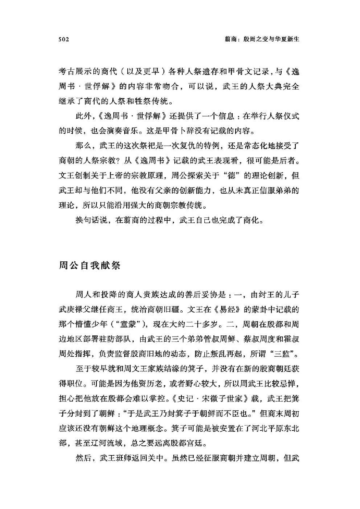
原书阅读器页 517原书物理 PDF 页 515印刷页 503
结果，三只龟甲占卜的兆像显示都是吉利，先王们同意了周公的恳请。[[fn:21]]
周公的这次自我献祭仪式，看上去奉行的并不是周公自己提倡的神用“德”衡量人间的理念，而属于典型的商人宗教逻辑：凡人用祭品（包括物品和人）奉献给神，以换取神的开心。也就是说，在面临重大而艰难的抉择时，周公的做法更保守，或许他认为，更古老的宗教观念可能更灵验，也更实用。
周公把自己献祭给诸神，和纣王走投无路中的自焚原理相似，但他并没有当场自杀，而是“归俟尔命”，等待诸神接走自己。这简直是对诸神法力的某种试探，很难说他虔诚地奉行了商人的宗教理念，反而有些侥幸和“伪善”。不过，这只是刚刚对宗教萌生怀疑的周公迈出的第一步，这时的他还未建构起一套新的世俗道德逻辑。
仪式结束后，周公的这篇祝词被用金泥密封起来，收藏到了宗庙的柜子中。之后，它还有更实际的作用，就是维系和侄子成王的关系。
但武王很快还是病重死去了，终年四十五岁。[[fn:22]] 这是灭商第二年的十二月，武王君临天下才二十二个月。从此，周朝进入周公摄政为王的特殊阶段，而这个新兴王朝也将迎来最严重的挑战。
注释
1《逸周书•大开武》中所载梦境是商国生葛，但《太平御览》卷三九七引《周书》则是“太姒梦见商之庭产棘”。此事应载于《逸周书•程寤》篇，但传世本只存篇名，正文缺。参见黄怀信等《逸周书汇校集注》（修订本），上海古籍出版社，2007年，第262、1141页；李学勤主编《清华大学藏战国竹简（壹）》，中西书局，2010年，第135页。
2《逸周书•宝典解》：“九德：一孝子畏哉，乃不乱谋；二悌，悌乃知序，序乃伦，伦不腾上，上乃不崩；三慈惠知长幼，知长幼，乐养老；四忠恕，是谓四仪，风言大极，意定不移；五中正，是谓权断，补损知选；六恭逊，是谓容德，以法从权，安上无慝；七宽弘，是谓宽宇准德以义，乐获顺嘏；八温直，是谓明德，喜怒不隙，主人乃服；九兼符，是谓明刑，惠而能忍，尊天大经。九德广备，次世有声。”
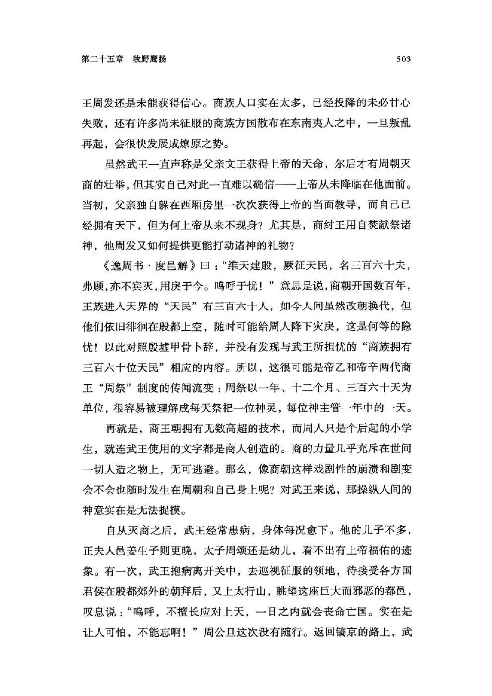
原书阅读器页 518原书物理 PDF 页 516印刷页 504
3这篇《泰誓》在后世有争议，它可能经过魏晋时人的改造，不过，诸如纣王“刳剔孕妇”和“斫朝涉之胫”的记载，在皇甫谧的《帝王世纪》中也有。
4《尚书•泰誓》孔颖达疏引皇甫谧《帝王世纪》。
5本书武王伐纣的时间表主要参考罗琨《商代战争与军制》，第334-358页。
6《史记正义》引《括地志》云，牧野在朝歌（今河南淇县）南郊。但是，《括地志》此论的前提是认为殷商都城在朝歌，故其关于牧野的说法自然也不可信。
7《帝王世纪•山海经•逸周书》，辽宁教育出版社，1997年，第34页。在更晚的古罗马共和国时期，当罗马执政官（统帅）带领军队出征时，执政官的卫队并非来自罗马的士兵，而是由各同盟城邦的青年显贵组成，这显然是为了强调罗马和同盟城邦的紧密关系。周武王此举可能和罗马人有相同用意。
8《史记•周本纪》。但殷墟甲骨文记载的商代用兵至多一万人，故七十万明显与实际不符。
9 参见《逸周书•武寤解》。此篇是四言诗，内容都是描写牧野之战征服商朝的经过，但题目“武寤解”与内容无关，可能是传抄错乱所致。“武寤”的意思是武王惊梦，这种内容在《逸周书》中出现过多次，故而容易导致抄写人发生错乱。
10 在盔甲戎装时，跪拜可能是单膝跪，然后摘头盔低首致敬，而非以头叩地。
11 传世的《尚书》中那篇著名的《洪范》也是武王和箕子的对话，但内容富有学理性，和当时紧张的军政局势完全无关。
12《逸周书•克殷解》和《史记•周本纪》均有记载这次武王向诸神汇报的仪式，而《史记》很可能取材于《逸周书》。
13 以上详见《史记•周本纪》。
14 以上详见《逸周书•商誓解》。
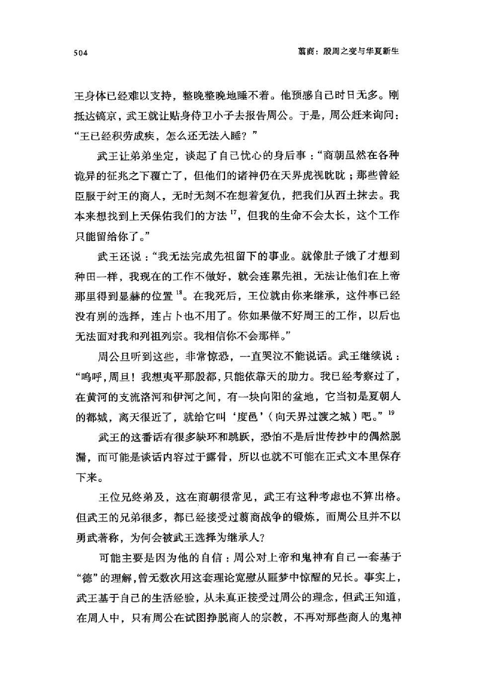
原书阅读器页 519原书物理 PDF 页 517印刷页 505
15《逸周书•世俘解》，这段文字中有些错字，如“猫二”可能是“豹二”。
16 在《逸周书•世俘解》中，人祭内容被分为了两处，而且可能存在错简。学者对此有过多种解释，如存在商历和周历的区别，以及中间可能有闰月等。关于这些祭祀举行的地点也有争议，有人认为是在关中的周原，但也有人认为当时时间不足以返回周原。可参见杨宽《西周史》，第106页；黄怀信等《逸周书汇校集注》（修订本），第421-443页。本书采用祭祀在殷地举行的观点，且根据祭祀日干支相连的特点，将祭祀日程复原为连续六天。
17 即消灭尽可能多的商人，但文本记载不可能如此露骨。
18 可能会被历代商王压制、欺辱。
19 以上详见《逸周书•度邑解》。
20 “元”表示嫡传的继承人之意。
21 以上详见《尚书•金滕》。亦可参见《周武王有疾周公所自以代王之志》，最早文本出自《清华大学藏战国竹简（壹）》，在传世《尚书》目录中依文内“金朦之匮”一句，简称为《金滕》。
22《真诰》卷十五注引《竹书纪年》：“（武王）年四十五”。
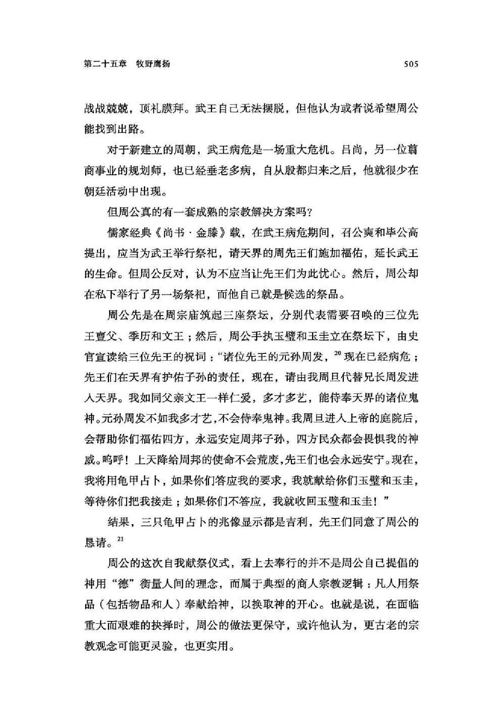
原书阅读器页 520原书物理 PDF 页 518印刷页 506
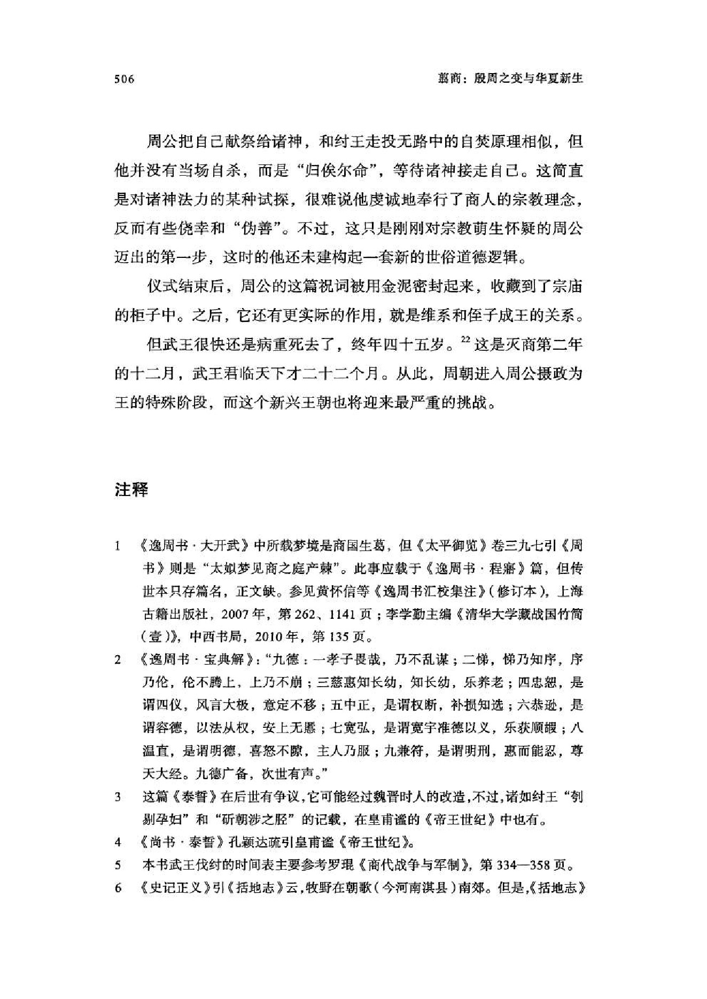
原书阅读器页 521原书物理 PDF 页 519印刷页 507
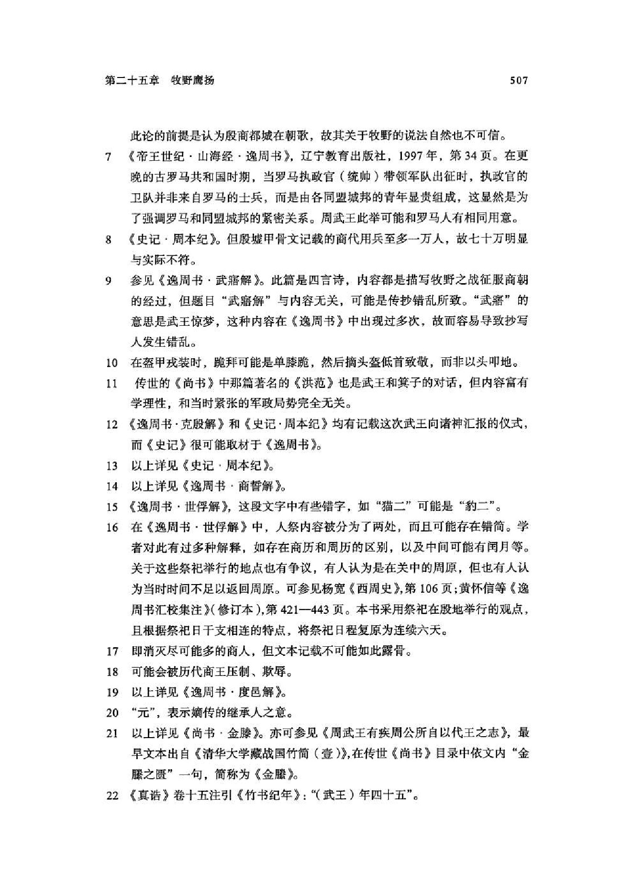
原书阅读器页 522原书物理 PDF 页 520印刷页 508
编辑札记
标记
先在正文中选择文字，再输入拼音；可用“拼音；简注”。